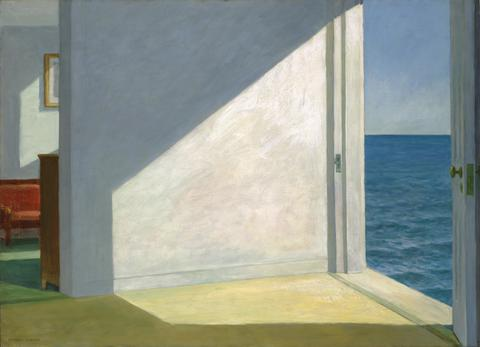

Rooms By The Sea
Artist: Edward Hopper
Year: 1951
Featured in Cinema
Film(s): The Truman Show(1998)
The Connection
Edward Hopper's Rooms by the Sea (1951) is often associated with the surreal atmosphere of The Truman Show (1998). Both feature ordinary domestic spaces that feel strangely isolated and disconnected from the outside world. The film's use of doorways opening onto unexpected environments,specifically near the end of the movie, echoes Hopper's painting, reinforcing themes of artificial reality and confinement.
← Back to Exhibition